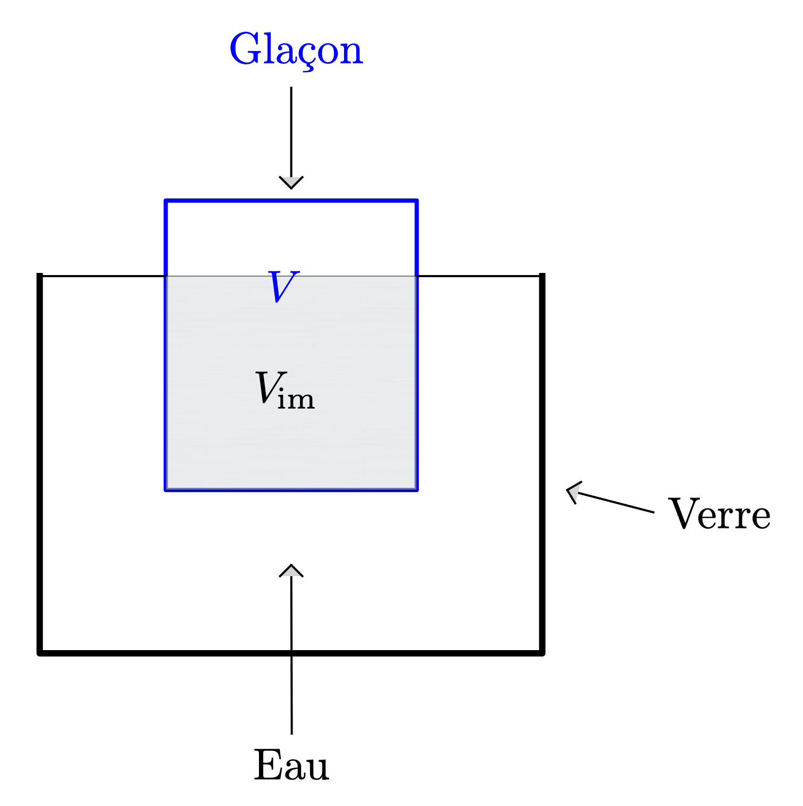

Problématique
On introduit un glaçon dans un verre d’eau et on ajoute de l’eau liquide de telle sorte que cette dernière affleure.
Que va-t-il se passer à la fonte du glaçon ? L’eau va-t-elle déborder du verre ?
Données
On note
- $V_g$ le volume du glaçon et $V_{im}$ le volume immergé du glaçon ;
- $\rho_l$ la masse volumique de l’eau liquide et $\rho_g$ la masse volumique de l’eau solide ;
- $V_f$ le volume occupé par l’eau initialement sous forme de glace une fois transformée en liquide ;
- On néglige la poussée d’archimède qui s’exerce sur la partie émergée du glaçon ;
- On note $g$ l’accélération du champ de pesanteur.
Résolution du problème
- Lorsque du changement de phase du glaçon $$ \ce{H2O (sol) –> H2O (liq)} $$ y a-t-il conservation de la quantité de matière d’eau (du glaçon) ?
Réponse
Comme la transformation physique est totale, la quantité de matière d’eau dans l’état initial est égale à la quantité d’eau dans l’état final : $n_g(\ce{H2O}) = n_l(\ce{H2O})$.
[Lire]